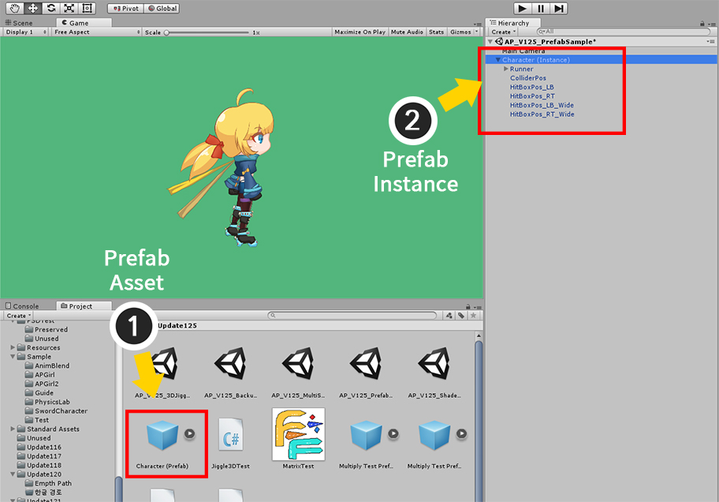
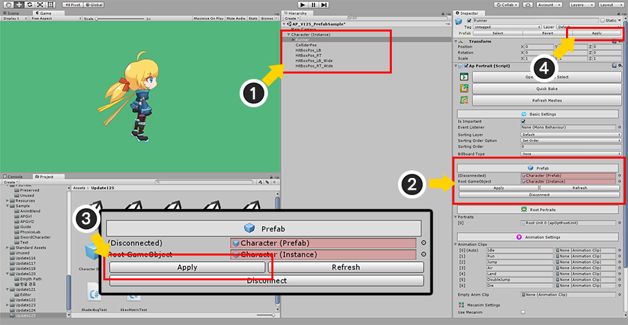
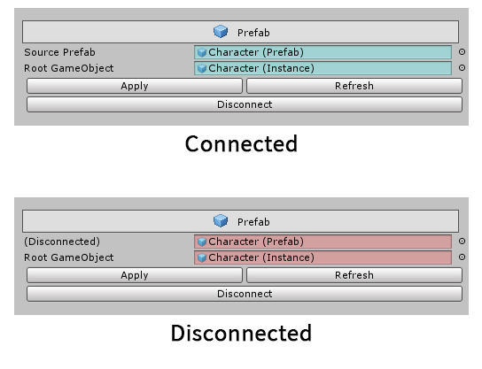
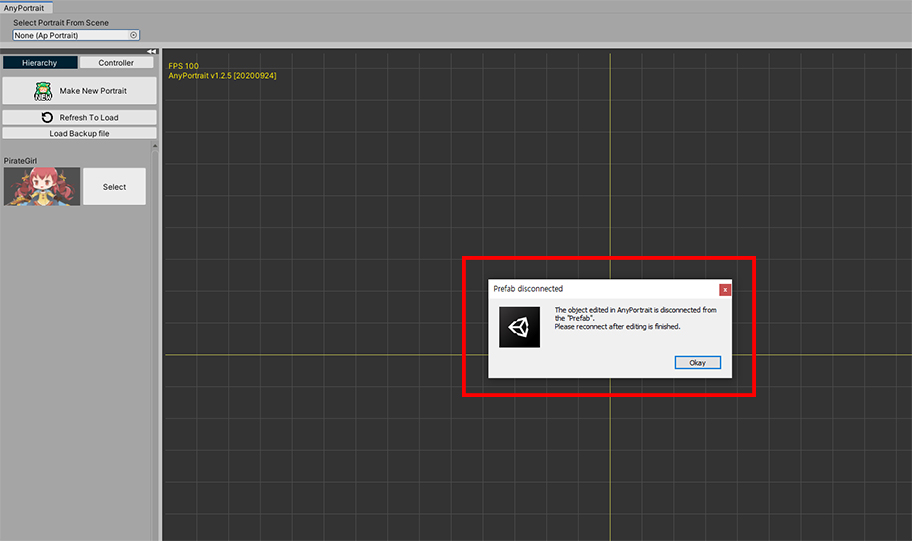
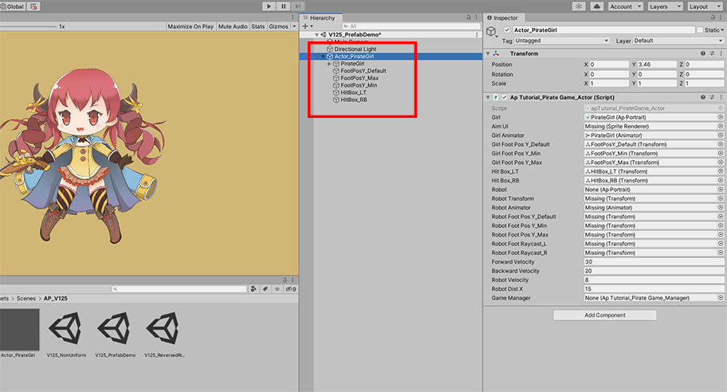
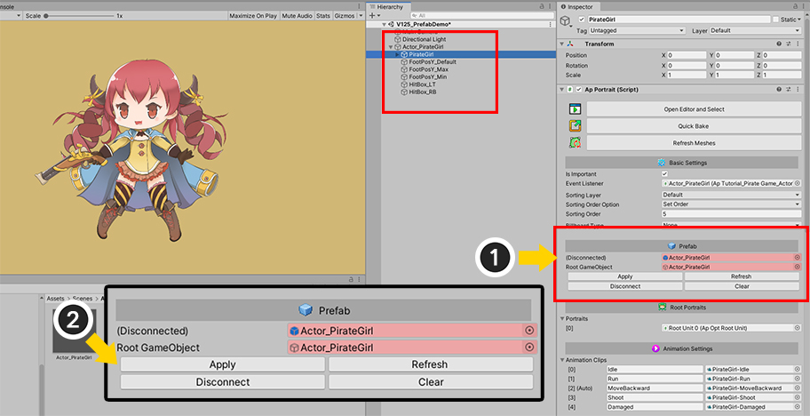
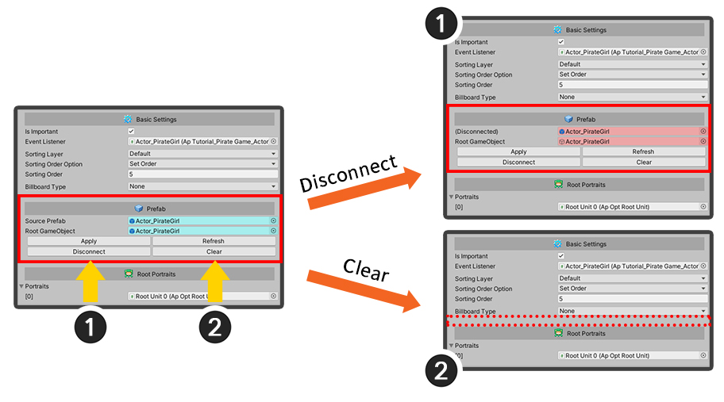
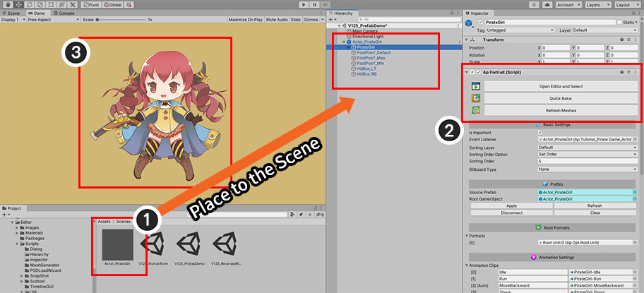

AnyPortrait > Manual > Editing Prefabs
Editing Prefabs
1.2.5
Prefab is very important in creating games with Unity.
This is a required feature because you can make game objects as resources.
There were some problems when saving the characters created by AnyPortrait up to the previous version as prefabs.
As of v1.0.3, the processing method for Prefab has been changed, so we will give you guidance on this page.

This is a screen where the character created by AnyPortrait is saved as a prefab.
You can see the blue text in the hierarchy.

When you try to edit a character saved with prefab, a dialog box appears.
AnyPortrait is basically developed by editing the GameObject located in the scene, which can cause problems if the target is prefab.
Pressing the OK button disconnects the prefab and converts it to a regular GameObject.

If you check Hierarchy again, you can see that it is changed to the default color instead of blue color.
This state is "disconnected" from the prefab, and the prefab information is not completely lost.

When you have finished all your edits, you can save them back to Prefab by pressing the Apply button.
Caution
If you force conversion to prefab during editing with AnyPortrait, you may not be able to save the data properly in the editor.
As noted above, the target must not be in prefab state during editing.
And, after converting it back to prefab, you have to save it.
Prefab Status UI (v1.2.5)
We have received feedback from several users about the inconvenience of handling prefabs in the Unity editor,
In addition, there was a problem that the new prefab system added in Unity 2018.3 was not normally compatible with AnyPortrait's prefab management method.
For this reason, the functions to Apply or Disconnect by directly controlling the prefab from AnyPortrait's UI was added in v1.2.5.
(The basic prefab management method is as described above.)

(1) The character is saved in the form of Prefab Asset.
(2) Place the Prefab asset in the scene as Prefab Instance.
(You cannot edit in the state of a prefab asset, so always place it in the scene before editing.)

As with the previous method, let's edit the Prefab instance by opening the AnyPortrait editor.
(1) If you select a character that is a prefab instance,
(2) a message appears indicating that it is automatically Disconnect because it cannot be edited in the prefab state.

Edit the character, run Bake, and return to the Unity scene.
(1) Select the character that was the prefab instance. In the Hierarchy, you can see that the name of the character GameObject has changed to Black instead of Blue. This is either because it is not the current Prefab instance or it is in a Disconnected state.
(2) Prefab Status UI added in v1.2.5 can be viewed in the Inspector.
(3) Click the Apply button in the Prefab Status UI to make it Connected to the source Prefab asset.
(If the version is earlier than Unity 2018.3, you can press the Apply button at the top of the Inspector as in (4).)

(1) The names of GameObjects in Hierarchy have been changed to Blue again. Now these have changed to the "Connected prefab instance state".
(2) This can also be checked in AnyPortrait's Prefab Status UI.

This is the Prefab Status UI added in v1.2.5.
This UI only appears in the Inspector for Prefab instances.
If this is synchronized with the original Prefab Asset (Connected), the UI will appear in blue as in the image above.
Conversely, if this is not synchronized with Prefab Asset (Disconnected or Missing), a red UI will appear as shown in the image below.
1. Source Prefab : This is the original Prefab Asset. If it is out of sync with the target, a label indicates what it is currently in.
2. Root GameObject : This is the root of this Prefab Instance. You can synchronize based on the root GameObject as well as GameObjects made with AnyPortrait.
3. Apply : Synchronize by applying the changes of the Prefab Instance to the Prefab Asset. If you want to revert, use Unity's UI or delete the instance.
4. Refresh : Refresh the sync state with the Prefab Asset.
5. Disconnect : Turn off synchronization with the Prefab Asset.
New prefab system introduced in Unity 2018.3
In Unity 2018.3, the "New Prefab System" was introduced.
Starting with this version, you can manage and edit Prefabs in more ways than ever before.
- Prefab Manual (Unity Official Manual)
Unfortunately, the new Prefab system is so different internally from the previous Prefab system that AnyPortrait could not be compatible with the new Prefab system.
It was not possible to edit with the AnyPortrait editor while keeping the prefab instance state, only "overwriting the edited character with the prefab asset" was valid.
However, using the Prefab Status UI introduced above, it is possible to synchronize while maintaining the connection information with the Prefab assets as much as possible.
Check out the explanation below on how v1.2.5 has improved from the previous method.

This is the screen from the new prefab system.
(1) This is the original Prefab Asset.
(2) This is the Prefab Instance where the Prefab asset is placed in the scene.

When you select a prefab instance and try to edit it with the AnyPortrait editor, you will see a message that the connection to the Prefab Asset is lost.

Execute Bake and return to the Unity scene.
You can see that the link to the Prefab Asset is disconnected, and it is not in the Prefab Instance state.
Since this state is there is no connection data to the source Prefab, in the previous way, you had to create or overwrite the Prefab Asset again.

However, if you select the AnyPortrait character and check the Inspector, you can see that "Prefab Status UI" appears.
In AnyPortrait, the last "Prefab Connection Data" is recorded, providing prefab synchronization functions to users.
(Actually, in Unity, all the Prefab Connection Data has been lost, so it has returned to a normal GameObject.)
(1) In Prefab Status UI, click (2) Apply Button.

(3) GameObjects have been restored to Prefab Instances again, and you can see that the edited character is applied as a Prefab Asset and synchronization is complete.

In Unity 2018.3 and later versions, prefab connection data is not maintained internally for characters edited with AnyPortrait.
AnyPortrait itself can record and synchronize the prefab connection data separately.
Conversely, you can also release the prefab connection data, there are two ways:
(1) Clicking the Disconnect button cancels synchronization with the Prefab asset. However, the connection data is not deleted, so you can click the Apply button again to perform synchronization.
(2) Clicking the Clear button completely deletes the connection data while canceling synchronization with the Prefab asset. Now this GameObject completely loses its role as a Prefab instance.
Notes
1. This method is a function of AnyPortrait itself, not a function provided by Unity, so if there is a change in the original prefab, it may not work properly.
2. As connection information is recorded in a separate way, it may not be possible to recover to a Prefab instance immediately after updating to AnyPortrait v1.2.5. In this case, create a Prefab instance after synchronizing by recreating or overwriting the Prefab asset.
One of the biggest features of the New Prefab System is the ability to "edit the original prefab directly".
However, some features of this system were not stabilized, so our team couldn't make it be compatible perfectly.
Therefore, editing in the AnyPortrait editor is currently limited to the original prefab.

(1) Select Original Prefab Asset and switch to the state where you can edit the original prefab.
(2) Select the AnyPortrait character inside the Prefab.
(3) The Editor cannot be opened message appears because it is the original prefab asset.
The above message appears from Unity 2020.1, and does not appear in versions between Unity 2018.3 and Unity 2020.1.
However, this only appears to be editable with AnyPortrait in the version "Because it is not possible to distinguish whether it is a Prefab asset or a Prefab instance", and editing the original prefab may cause various problems. .
Therefore, please always edit the prefab in the following way.

(1) Select the Prefab Asset you want to edit and place it into the scene.
(2) If you select Prefab Instance placed in the scene, you can edit or Bake it with the editor.
(3) Run Bake or click the Refresh Meshes button to check the rendered character, and then execute re-sync.